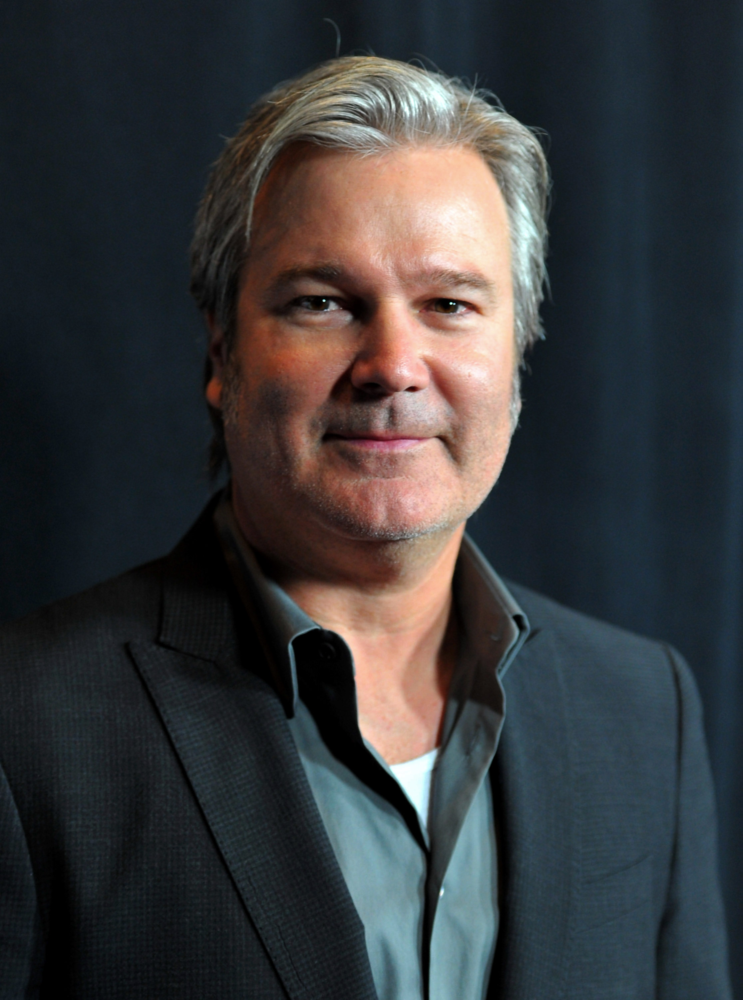
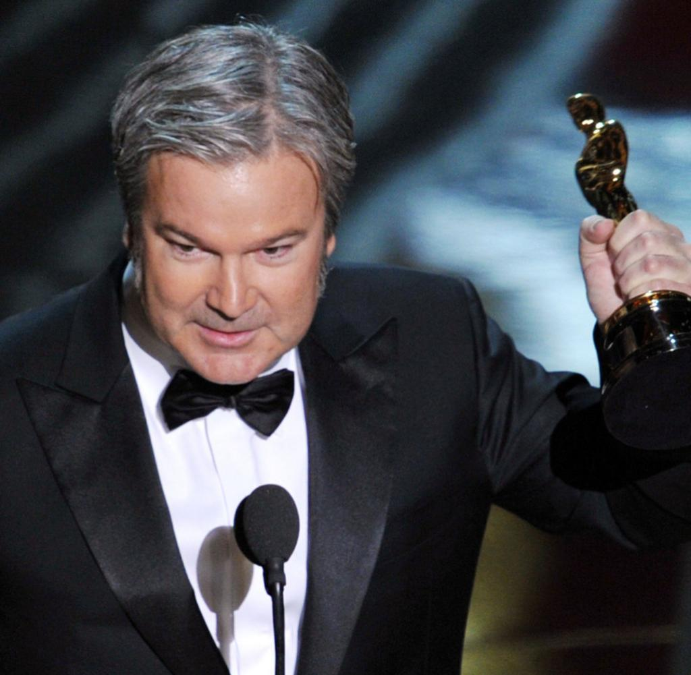

Licence de cinéma et de télévision en poche, obtenue à UCLA (Université de Los Angeles), Gore Verbinski débute sa carrière en réalisant des spots publicitaires et des vidéos musicales pour la compagnie Limelight Pictures, puis pour des marques telles que Nike ou Coca-Cola.

C’est en cette même année 2011 que Gore Verbinski réalise son premier film d’animation, Rango. Il s'agit d'une parodie de western spaghetti, remplie de clin d’œil aux grands films du genre comme Le bon, la brute et le truand. Il demande tout naturellement à Johnny Depp de doubler la voix de son héros.
Gore Verbinski choisit de travailler avec le studio d’effet spéciaux de Georges Lucas, ILM (www.ilm.com), pour créer son film, ce qui est également une première pour eux. L'année suivante, Rango remporte l’oscar du meilleur film d’animation.